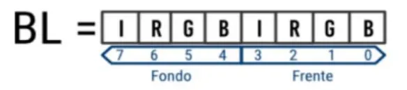
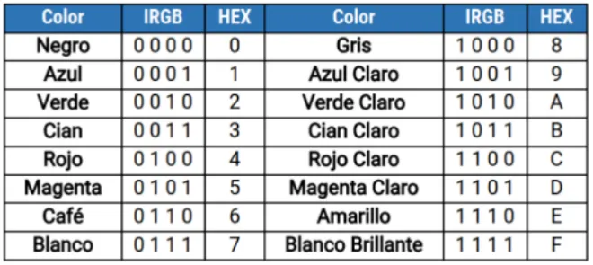

Las interrupciones son un mecanismo fundamental en la arquitectura de las computadoras, diseñadas para mejorar la eficiencia y la capacidad de respuesta del sistema. En términos simples, una interrupción es una señal que recibe el procesador para indicar que un evento o una acción debe ser tratada de inmediato, suspendiendo temporalmente el flujo de trabajo actual del programa principal para ejecutar una rutina de servicio de interrupción (ISR).
El propósito principal de las interrupciones es permitir que el procesador responda a eventos tanto internos como externos de manera rápida y eficiente. Estos eventos pueden incluir la finalización de una operación de entrada/salida, un error de hardware, o una solicitud de atención inmediata por parte del software.
Las interrupciones se clasifican generalmente en dos categorías:
Cuando se genera una interrupción, el flujo típico de procesamiento es el siguiente:
En la programación en ensamblador, las interrupciones son especialmente relevantes porque permiten a los programadores gestionar directamente y con gran detalle cómo y cuándo el procesador debe responder a distintos tipos de solicitudes y eventos, otorgando un control preciso sobre la ejecución del hardware.
Esta introducción establece una base para entender cómo las interrupciones en modo texto utilizan estos principios para operar eficientemente dentro de un sistema computacional. A continuación, profundizaremos en las interrupciones específicas en modo texto y su aplicación práctica.
Inicia el modo texto o video, dependiendo del argumento que se indique en el registro AL.
MOV AH, 00h
MOV AL, 03h ; Modo texto 80x25
INT 10h ; Ejecutar interrupción
Modifica la apariencia del cursor en pantalla, estableciendo sus límites superior e inferior.
MOV AH, 01h
MOV CH, 0 ; Línea de inicio del cursor
MOV CL, 7 ; Línea final del cursor
INT 10h ; Ejecutar interrupción
Mueve el cursor a la posición especificada por las coordenadas de fila (DH) y columna (DL).
MOV AH, 02h
MOV BH, 0
MOV DH, 10 ; Fila
MOV DL, 20 ; Columna
INT 10h ; Ejecutar interrupción
Obtiene la posición actual del cursor en términos de fila y columna.
Argumentos de entrada:
Argumentos de salida:
MOV AH, 03h
MOV BH, 0
INT 10h ; Ejecutar interrupción
; Los valores de posición se retornarán en DH (fila) y DL (columna)
Cambia la página visual actual en la pantalla de modo texto.
MOV AH, 05h
MOV AL, 0 ; Número de página
INT 10h ; Ejecutar interrupción
Lee el carácter y su atributo en la posición actual del cursor.
Argumentos de entrada:
Argumentos de salida:
MOV AH, 08h
MOV BH, 0
INT 10h ; Ejecutar interrupción
; El carácter leído se retorna en AL y el atributo en AH
Escribe un carácter con un atributo de color específico en la posición actual del cursor, repitiéndolo según se especifique.
El "atributo" de un carácter es un byte que usan las instrucciones de BIOS para determinar el color del fondo y el frente del carácter que se desea mostrar en pantalla. Este byte se divide en dos partes, desde el bit 0 hasta el 3 para definir el color del frente y desde el bit 4 hasta el 7 para el del fondo. Este byte se pone en un registro antes de llamar la interrupción, por lo general es en BL. De la siguiente manera:

Esta configuración de IRGB, se refiere a Intensidad, Rojo, Verde y Azul, puede representar 16 colores de la siguiente manera:

Esta interrupción se utiliza de la siguiente manera:
MOV AH, 09h
MOV AL, 'A'
MOV BH, 0
MOV BL, 07h ; Atributo (color)
MOV CX, 1 ; Repetir una vez
INT 10h ; Ejecutar interrupción
Retorna el siguiente carácter en el buffer del teclado; Si no hay uno disponible, espera a que aparezca uno.
Argumentos de entrada:
Argumentos de salida:
MOV AH, 00h ; Establece la función para leer el carácter
INT 16h ; Llama a la interrupción del teclado
; AH ahora contiene el código de escaneo del BIOS
; AL ahora contiene el carácter ASCII leído
Escribe una cadena de caracteres terminada en ‘$' en la consola de MS-DOS.
; Definir la cadena de caracteres que será escrita en consola
cadena DB 'Hola mundo$',0 ; Cadena a escribir, terminada con '$'
; Cargar los valores en los registros para la interrupción
MOV AH, 09h
MOV DX, cadena ; Carga la dirección de inicio de la cadena en el registro DX
INT 21h ; Ejecutar interrupción
Este programa en Assembler, diseñado para ejecutarse en un entorno DOS, demuestra cómo comparar un número predefinido con el valor 5 y visualizar mensajes apropiados en el modo texto según el resultado de la comparación (mayor, menor o igual). El ejercicio involucra inicializar el modo de texto, posicionar el cursor, gestionar la visualización de mensajes en diferentes páginas de texto, y esperar la interacción del usuario mediante teclas. Este enfoque ayuda a los estudiantes a entender la manipulación de la pantalla y la entrada desde el teclado en la programación a nivel de sistema.
org 100h
section .data
msgMayor db 'El digito es mayor que 5$'
msgMenor db 'El digito es menor que 5$'
msgIgual db 'El digito es igual a 5$'
msgFin db 'Fin del programa$'
org 100h: Define el punto de inicio del programa en la memoria,
específicamente para un archivo COM en DOS.
.data: Declara los mensajes que se mostrarán basados en el resultado de
la comparación del número con 5, y al final del programa.
section .text
main:
CALL IniciarModoTexto
MOV BH, 0d ; Establece la página 0
CALL CentrarCursor
CALL CompararNumero
CALL EsperarTecla
CALL CambiarPagina
MOV BH, 1d ; Cambia a la página 1
CALL CentrarCursor
CALL ImprimirFin
CALL EsperarTecla
INT 20h
IniciarModoTexto: Configura el modo de texto 80x25.
CentrarCursor: Posiciona el cursor en el centro de la pantalla.
CompararNumero: Realiza la comparación del número almacenado en
AL con 5.
EsperarTecla y CambiarPagina: Espera la presión de una tecla y cambia la página del modo texto
para mostrar nuevos mensajes.
ImprimirFin: Muestra el mensaje de finalización del programa.
IniciarModoTexto:
MOV AH, 0h
MOV AL, 03h ; Establece modo texto 80x25
int 10h ; Llama a la interrupción del BIOS para cambiar el modo texto
RET
CentrarCursor:
MOV AH, 02h
MOV DH, 10 ; Fila central
MOV DL, 25 ; Columna central
int 10h ; Llama a la interrupción del BIOS para posicionar el cursor
RET
CambiarPagina:
MOV AH, 05h
MOV AL, 01H ; Cambia a la página 1
INT 10h
RET
CompararNumero:
MOV AL, 5d
CMP AL, 5
JA mayor
JB menor
JE igual
RET
AL, compara con 5, y salta a las
etiquetas correspondientes según si es mayor, menor o igual.
EsperarTecla:
MOV AH, 00h
INT 16h
RET
INT 16h.
mayor, menor, igual): Utiliza INT 21h con
AH = 09h para mostrar mensajes según el resultado de la
comparación.
mayor:
MOV AH, 09h
MOV DX, msgMayor
INT 21h
RET
menor:
MOV AH, 09h
MOV DX, msgMenor
INT 21h
RET
igual:
MOV AH, 09h
MOV DX, msgIgual
INT 21h
RET
ImprimirFin:
MOV AH, 09h
MOV DX, msgFin
INT 21h
RET
Laboratorio-05"
dentro del repositorio. Esta carpeta será el contenedor para los
archivos de esta práctica.
Laboratorio-05", crear un
archivo llamado desarrollo.asm. En este archivo, colocar todos los ejemplos y ejercicios
desarrollados durante la práctica de laboratorio.
tarea.asm dentro de la carpeta
"Laboratorio-05". Este archivo debe contener la
solución a la tarea propuesta.
└── Laboratorio-05
├── desarrollo.asm
└── tarea.asm
desarrollo.asm una vez completado
el desarrollo durante la práctica.
tarea.asm una vez completada la
tarea propuesta.
Criterio |
Porcentaje |
Desarrollo |
50% |
Tarea |
40% |
Ayuda necesitada |
10% |
|
Total |
100% |